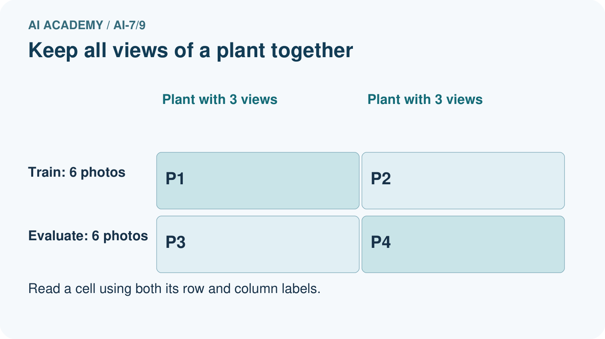
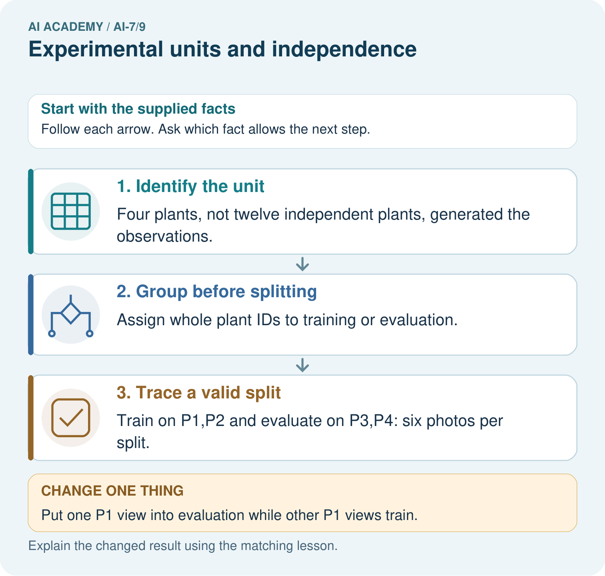

AI Academy · Level 7 · Grade 12 · Week 9 · Workbook
Experimental units and independence
Learn to understand, design, build, test and explain AI systems responsibly.
Project: Reproducible AI Research Study
Workbook · 1 of 14
Recall and choose your starting point
Try the recall before opening notes. Then use a different colour or a labelled second line to correct your explanation.
Baselines and fair comparisons
Without opening the old lesson, explain one key idea from Baselines and fair comparisons. Give an example and a mistake that the idea helps you avoid.
A literature comparison matrix
Without opening the old lesson, explain one key idea from A literature comparison matrix. Give an example and a mistake that the idea helps you avoid.
Finding primary research
Without opening the old lesson, explain one key idea from Finding primary research. Give an example and a mistake that the idea helps you avoid.
Workbook · 2 of 14
Practise with fading help
Use W2: Trace the worked case for Experimental units and independence. Record the answer once; the lesson and workbook refer to the same attempt.
| Given inputs | Procedure I chose | Middle steps | Result and check |
|---|---|---|---|
Workbook · 3 of 14
Individual reasoning check
Use the worked case for Experimental units and independence. Proposed explanation: “The worked result establishes every future case”. Decide whether this explanation is supported. Point to the step or supplied fact that decides; explain your repair if needed.
Workbook · 4 of 14
Independent transfer case
Independent case: Apply a new case independently
Five classrooms each contribute20 student responses under a classroom-level assignment. Identify assignment units and measurements.
Attempt this case before feedback. Record any help. Earlier examples below are further practice; a case already practised with feedback cannot establish fresh transfer.
Workbook · 5 of 14
W1 Explain the mechanism
Explain the weekly mechanism in your own words. Use the worked scenario to name its input, decision rule and output.
Workbook · 6 of 14
W2 Trace the worked case
Three queries each run four times produce12 outputs. Show the intermediate steps and give the conclusion with its scope.
Workbook · 7 of 14
W3 Audit the limit
A report omits this qualification: Independence follows design and relationships, not row count. Explain how omitting it could change a reader's interpretation, and write an accurate replacement.
Workbook · 8 of 14
W4 Apply a new case independently
Five classrooms each contribute20 student responses under a classroom-level assignment. Identify assignment units and measurements.
Workbook · 9 of 14
W5 Design a revealing follow-up
For the worked scenario, propose one additional case that could reveal a failure, describe its expected outcome before running it, and explain what would need to remain fixed for a fair comparison. Do not reuse W4 as a new final test after receiving feedback.
Workbook · 10 of 14
Project checkpoint and reflection
Add a labelled experimental units and independence evidence sheet to Reproducible AI Research Study. Show how you can explain the mechanism and terminology of experimental units and independence. Use the supplied fictional case and keep its inputs, intermediate steps, calculation or prediction, and limitation. Connect this record to last week’s record; a matching answer without a trace is insufficient.
Workbook · 11 of 14
Feedback, return check and learning record
| Evidence | My record |
|---|---|
| Worked alone / hint / model | |
| First step I repaired and why | |
| New case checked later; date and result | |
| What I can now explain without notes | |
| One remaining question |
Revisit this idea with your teacher after a delay. Familiarity is different from explaining and using it on a changed case.
Workbook · 12 of 14
Pictorial case practice: Experimental units and independence
Photos are not always independent plants. A dataset has twelve photos: three views of each of four plants. The intended use is identifying new plants.
Plant IDs P1–P4 each have three views. All views of a plant must stay in one split.


Count independent plants and photo views. Construct the stated group-correct split, then explain why placing a P1 view in evaluation creates leakage for the new-plant goal.
Support used: alone / hint / worked example. This record is practice evidence.
Project connection: For the Reproducible AI Research Study, retain an annotated worked trace and the changed-case reasoning. Connect the claim to its records, units and assumptions so another investigator can challenge or reproduce it.
Workbook · 13 of 14
Project portfolio milestone
Project: Reproducible AI Research Study
Current milestone: Make a transparent first version. Keep a trace of how one input becomes an output; explain the rule or learned component.
For the Reproducible AI Research Study, retain an annotated worked trace and the changed-case reasoning. Connect the claim to its records, units and assumptions so another investigator can challenge or reproduce it.
| Evidence to keep | My record |
|---|---|
| This week’s input and deciding step | |
| Prediction and actual result (or labelled paper trace) | |
| One change since the previous checkpoint and why | |
| One error or limit and the next test |
Workbook · 14 of 14
Supported practice and learning evidence
Use this supported practice once, in the browser or on paper. Keep the reserved independent assessment for a separate first attempt before teacher feedback.
Photos are not always independent plants. A dataset has twelve photos: three views of each of four plants. The intended use is identifying new plants.
Practice 1: explain the deciding evidence
Which labelled step matches this detail? Train on P1,P2 and evaluate on P3,P4: six photos per split.
1. Group before splitting
2. Identify the unit
3. Trace a valid split
Hint if needed: Read the steps in the pictorial case. Match the supplied detail to the stage that performs or records it.
After your attempt, compare with the supported explanation: Trace a valid split Train on P1,P2 and evaluate on P3,P4: six photos per split. Repeated views from one object share information. Counting them as independent units or scattering them across splits can exaggerate evidence for new-object performance.
Practice 2: explain the deciding evidence
Changed-case practice: Put one P1 view into evaluation while other P1 views train. Which conclusion is supported by the supplied facts?
1. Flag object-level leakage for this new-plant target.
2. This one example guarantees correct results for every future input.
3. We can decide the result without examining the changed input or the procedure.
Hint if needed: Use the changed condition and the deciding step in the pictorial trace. The answer must say what follows from those facts.
After your attempt, compare with the supported explanation: Flag object-level leakage for this new-plant target. Evaluation now includes a plant already represented during training.
Repair a missing building block
Review Baselines and fair comparisons (ai-7/8). Goal: Explain the mechanism and terminology of baselines and fair comparisons. Short practice: Calculate 6/8 and 7/8 correctness and name the one-case gain. Why is giving B the answer key incompatible with an unseen comparison to the simple baseline?. Return to this week and explain what you changed.
Review A literature comparison matrix (ai-7/6). Goal: Explain the mechanism and terminology of a literature comparison matrix. Short practice: Explain why 8/10 indoors and 16/20 outdoors share a rate but not a controlled comparison. Which condition column must the literature matrix preserve?. Return to this week and explain what you changed.
Review Finding primary research (ai-7/3). Goal: Explain the mechanism and terminology of finding primary research. Short practice: Separate what the blog claims from what the original report records. Which methods and denominator must be inspected, and what status is honest if the original report is unavailable?. Return to this week and explain what you changed.
Keep your completed work
Use Download completed work in the hosted lesson to export your answers, reflections, practice feedback and code-run evidence. Open the HTML copy to read or print it. Drafts stay in this browser when storage is available; clear drafts on a shared device.